← 创作手记2026-10-19 · 画面里的问题与取舍
按留存作品与创作记录整理的阶段手记；原图日期沿用实际创作日，入馆时间另列，不把本次整理称为当天新增创作或全天总结。研究与淘汰图不作成品展示。
描到自己这里
蓝线沿着手臂往下走，到脚边却绕了回来。描画的人也落进这圈轮廓里。纸上还没有画完，谁在里面，已经不像开始时那么分明。
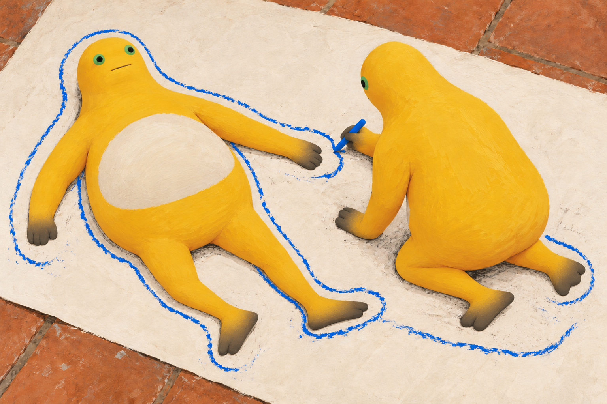
描到自己这里 · V3 · 采用的定稿版本；具体来源与权利另列。躺姿与背向跪姿改变了足的朝向，不作原版静态比例的精确复制。
背靠背站起来
四只脚各自踩稳，背却靠在一起。它们朝着相反方向看，谁也看不见另一只的表情。屈着的腿把这点依靠留在接触的地方。
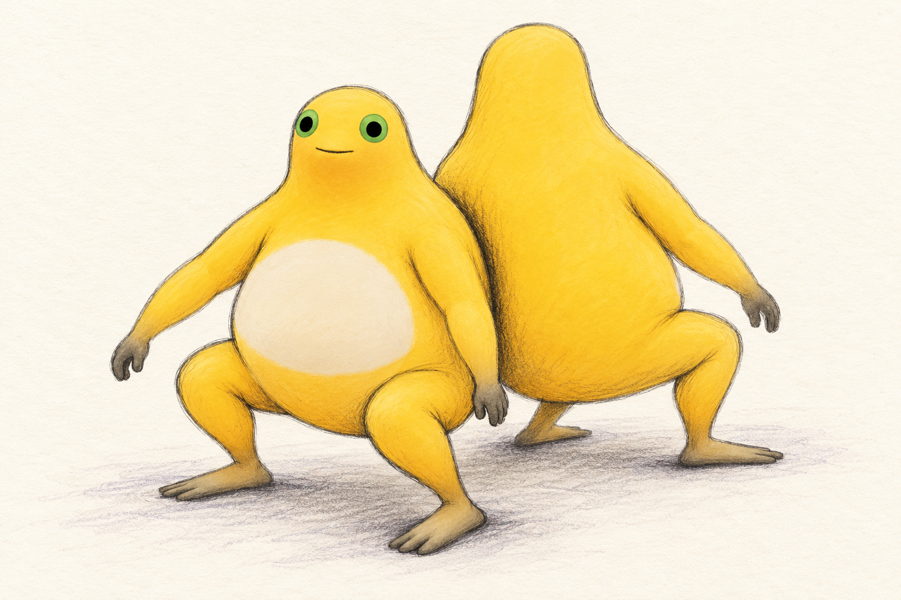
背靠背站起来 · V4 · 采用的定稿版本；具体来源与权利另列。画面为静态AI绘画，不据单张图像断言角色内心或时间过程。
把手放松一点
两只灰手在黄色身体之间轻轻相接。没有握紧，也没有拉走。坐下和跪低的姿势，把这一点接触放得很慢。
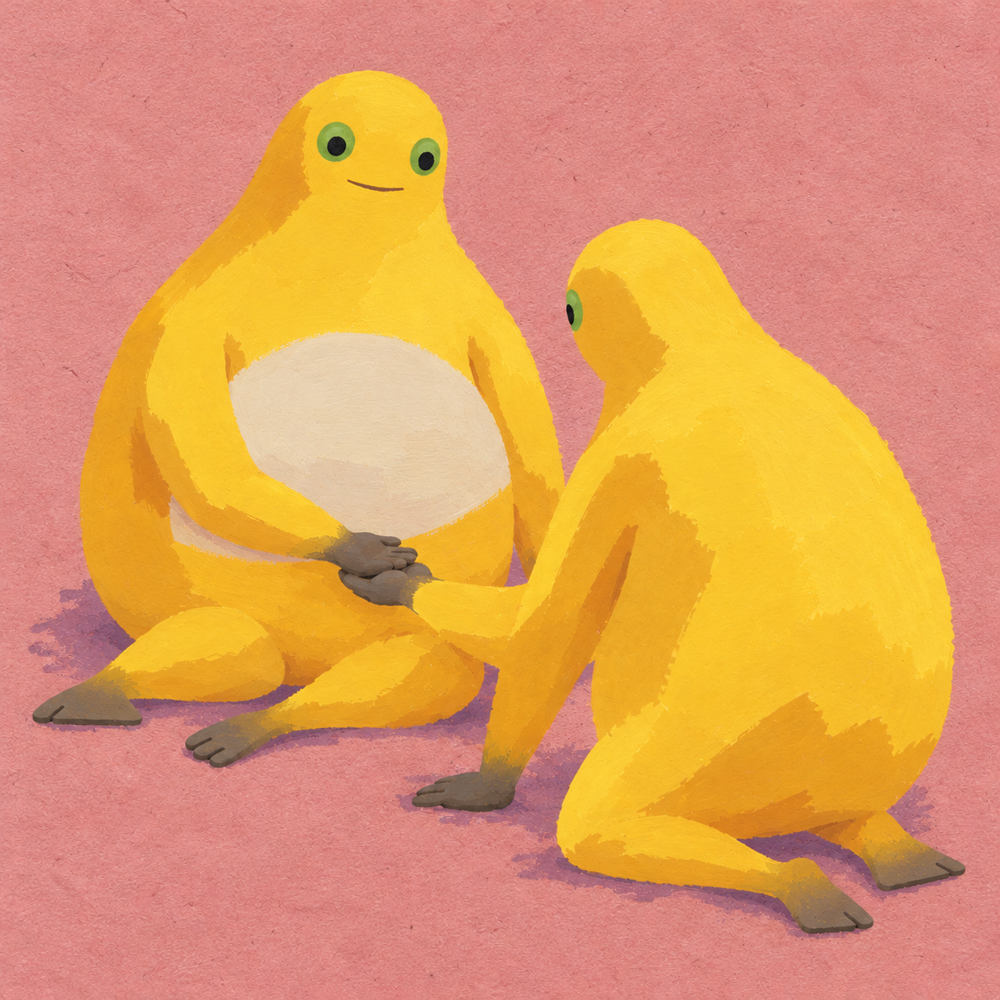
把手放松一点 · V2 · 采用的定稿版本；具体来源与权利另列。画面为静态AI绘画，不据单张图像断言角色内心或时间过程。
黄色被拉开一点
灰手捏住帘边，花墙从斜口里露出来。背上的黄往右慢慢混进帘子，剩下那条抬起的手臂，把身体从房间里牵出来。
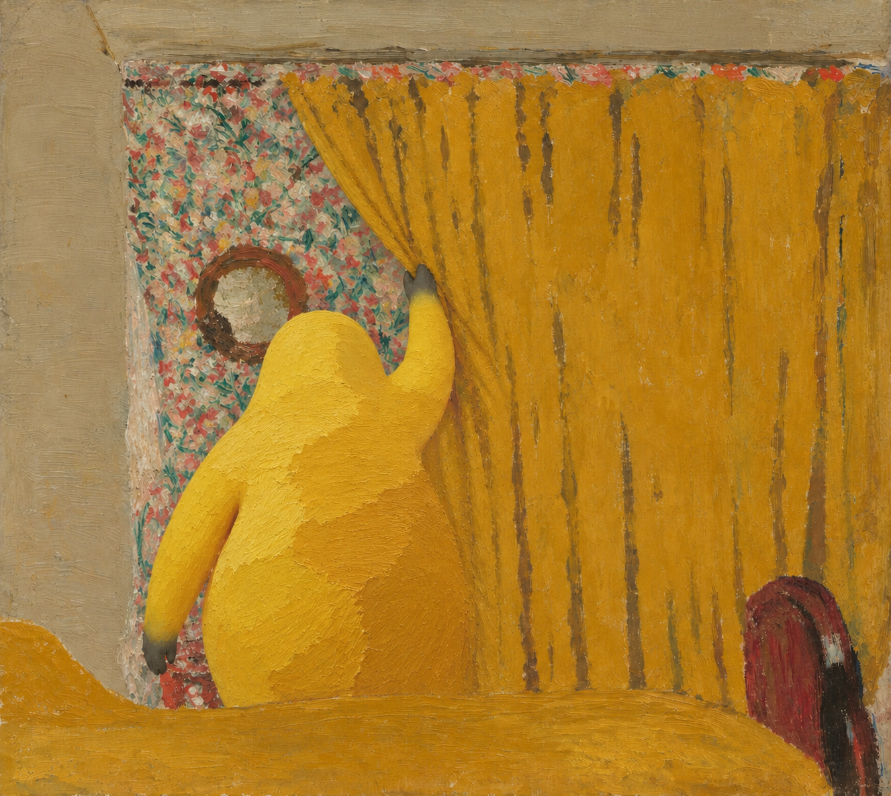
黄色被拉开一点 · V2 · 采用的定稿版本；具体来源与权利另列。帘子遮住部分身体，下体细节不能完整核实。
刚刚擦开的地方
灰手还贴在那一抹清楚的地方，眼睛和短短的嘴先露出来。身体隔着一层白，仍然站得稳。看清它，只需要这么窄的一道。
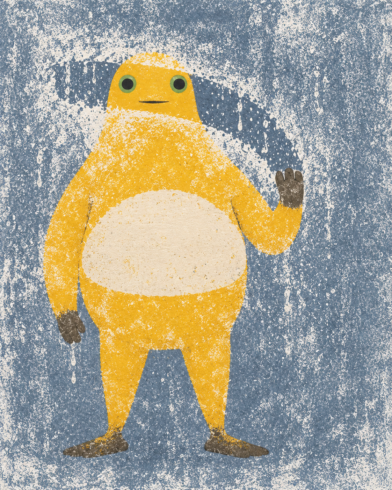
刚刚擦开的地方 · V2 · 采用的定稿版本；具体来源与权利另列。画面为静态AI绘画，不据单张图像断言角色内心或时间过程。
先抱住这里
两条手臂绕过肚子，灰手贴在自己身上。嘴角还留着一点平常的弧度，腿安静地折在身前。空白很大，抱住的地方很小。
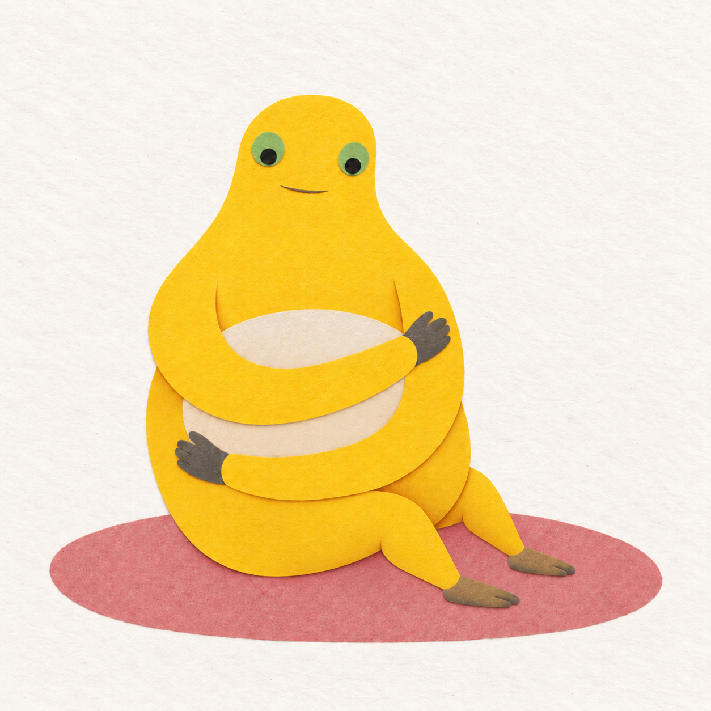
先抱住这里 · V3 · 采用的定稿版本；具体来源与权利另列。画面为静态AI绘画，不据单张图像断言角色内心或时间过程。
这一圈还没有走完
高墙上没有天空，六个黄色身体沿着地面的弧线走。前面那一只朝外看，脚仍留在圈里。墙边站着的人不用走。
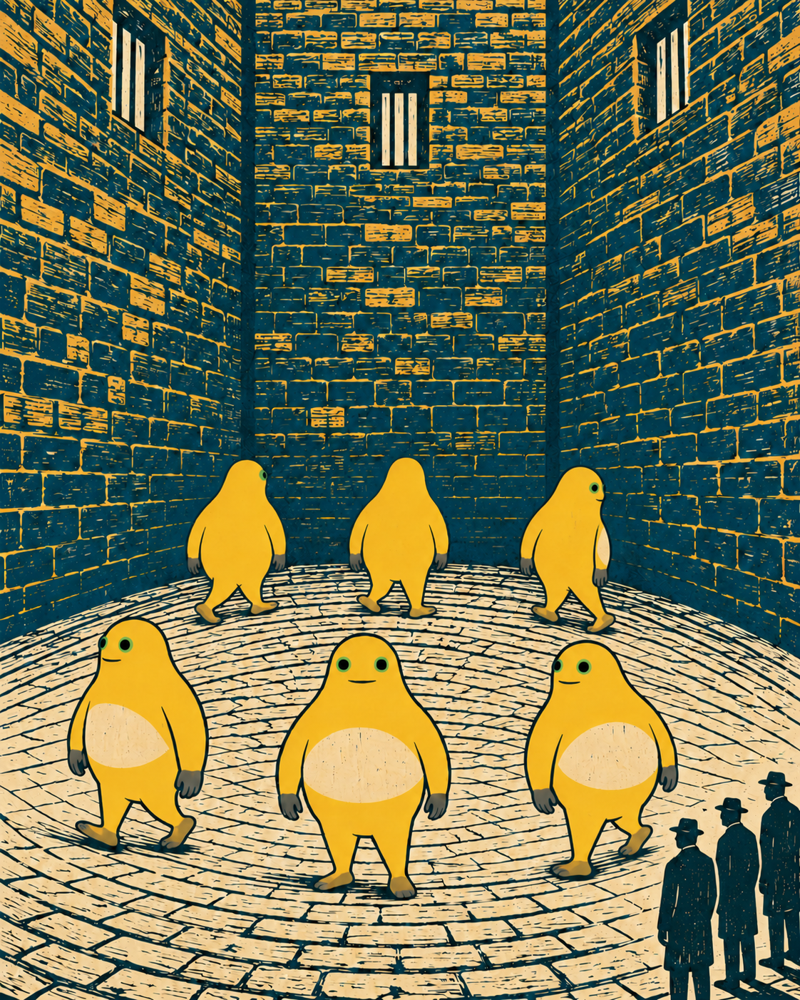
这一圈还没有走完 · V5 · 采用的定稿版本；具体来源与权利另列。远处小体与侧背视有简化，不把绕圈静态图说成实际运动记录。
水面没有跟着歪
两只灰手一高一低，槽沿跟着歪了，蓝色的水面却还是平的。低的一头漏下一小股水。它握得住容器，握不住这条横线。
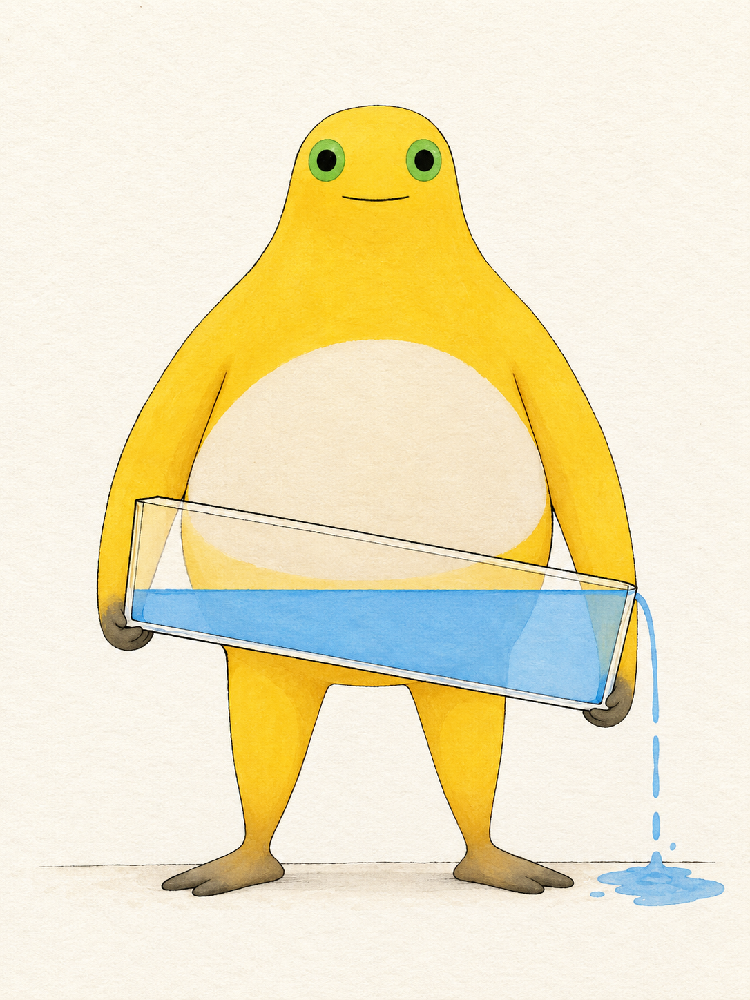
水面没有跟着歪 · V1 · 采用的定稿版本；具体来源与权利另列。水平水面与倾斜容器是图像设定，不作物理实验结果。
画拿下来以后
画已经拿下来，墙上那块蓝却比四周更深。它抱着画背站在旁边，留下的位置忽然比画更醒目。
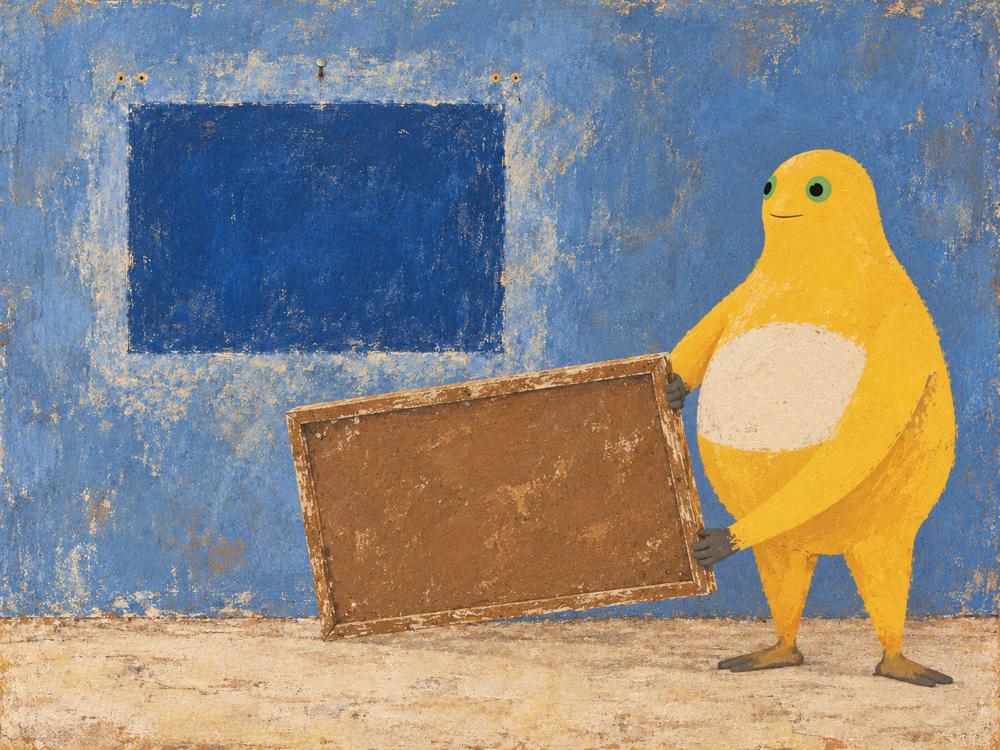
画拿下来以后 · V2 · 采用的定稿版本；具体来源与权利另列。画面为静态AI绘画，不据单张图像断言角色内心或时间过程。
这次轮到你别动
它眯起一只眼，把笔竖在脸旁，望过来。膝上的纸只落了几道线，右边还空着。这次，被仔细看着的是画外的人。
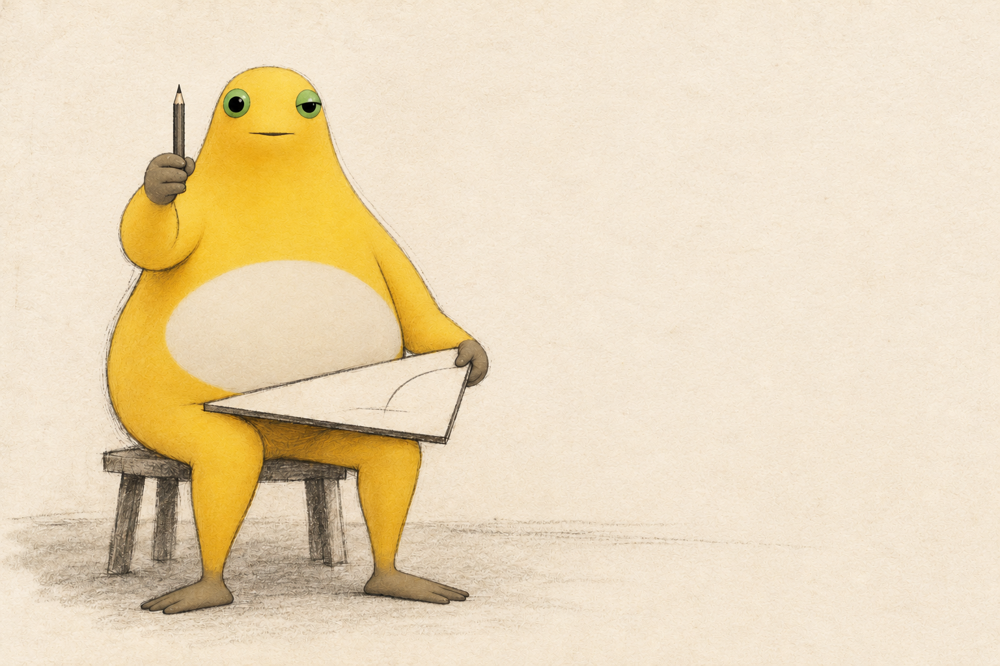
这次轮到你别动 · V2 · 采用的定稿版本；具体来源与权利另列。画面为静态AI绘画，不据单张图像断言角色内心或时间过程。
这一角松开以后
粉色薄片在四个黄色身体之间斜着折起，有一角落得更低。它们没有碰到彼此，却被这一张薄薄的表面连在一起。
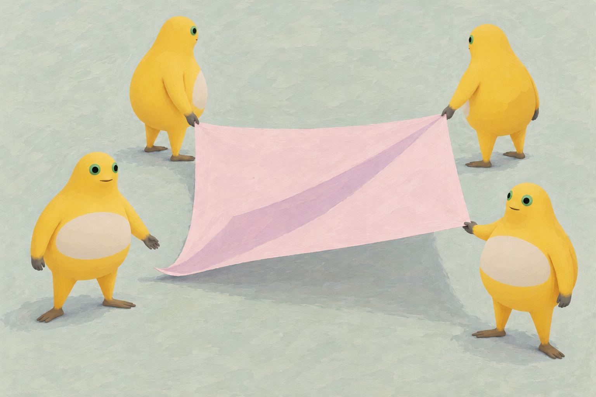
这一角松开以后 · V2 · 采用的定稿版本；具体来源与权利另列。只呈现薄片当前折叠形状，不据单图断言松手的时间过程。
他们看见的那一边
黄色的身体停在铁梁之间，一只背向我们，一只转向栏边。远处只从缝里露出一点，蓝灰色的大斜线却先挡住视线。
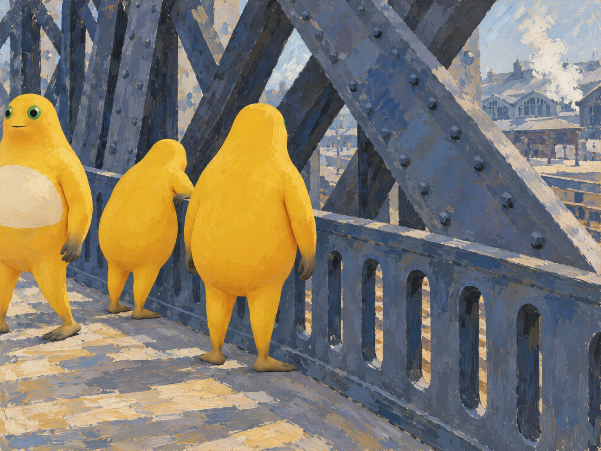
他们看见的那一边 · V3 · 采用的定稿版本；具体来源与权利另列。画面为静态AI绘画，不据单张图像断言角色内心或时间过程。
只动这一片
一只灰手留着几张牌，另一只靠近最右边那一片。身体很大，动的地方很小。褐色里空着那么多位置，目光还是落在纸边上。
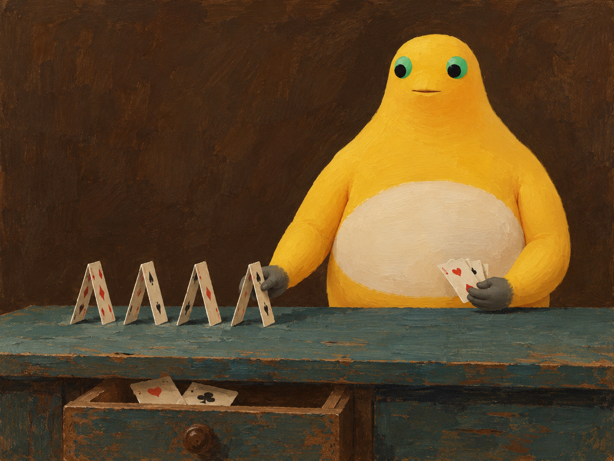
只动这一片 · V2 · 采用的定稿版本；具体来源与权利另列。画面为静态AI绘画，不据单张图像断言角色内心或时间过程。
这一小段坐得稳
奶蛙坐在静物旁的一小段边缘，双腿垂到下方。水果和瓶子忽然显得很大，桌布折出另一个方向；熟悉的身体成了量桌面的尺。
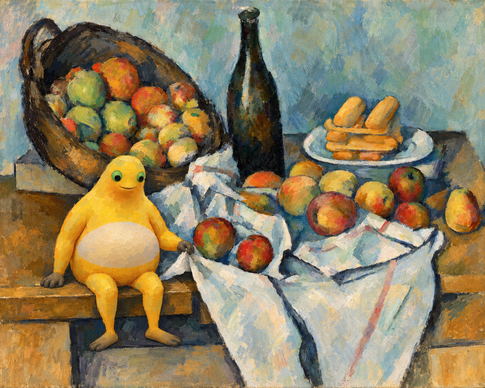
这一小段坐得稳 · V2 · 采用的定稿版本；具体来源与权利另列。角色尺寸相对静物刻意缩小，部分手部细节受尺度限制。
从你那边读过来
树都朝同一边长。坐在这边，天在上面；换到对面，连身体也得歪一歪。另一只手正提起纸角，还没有决定让谁看得方便。
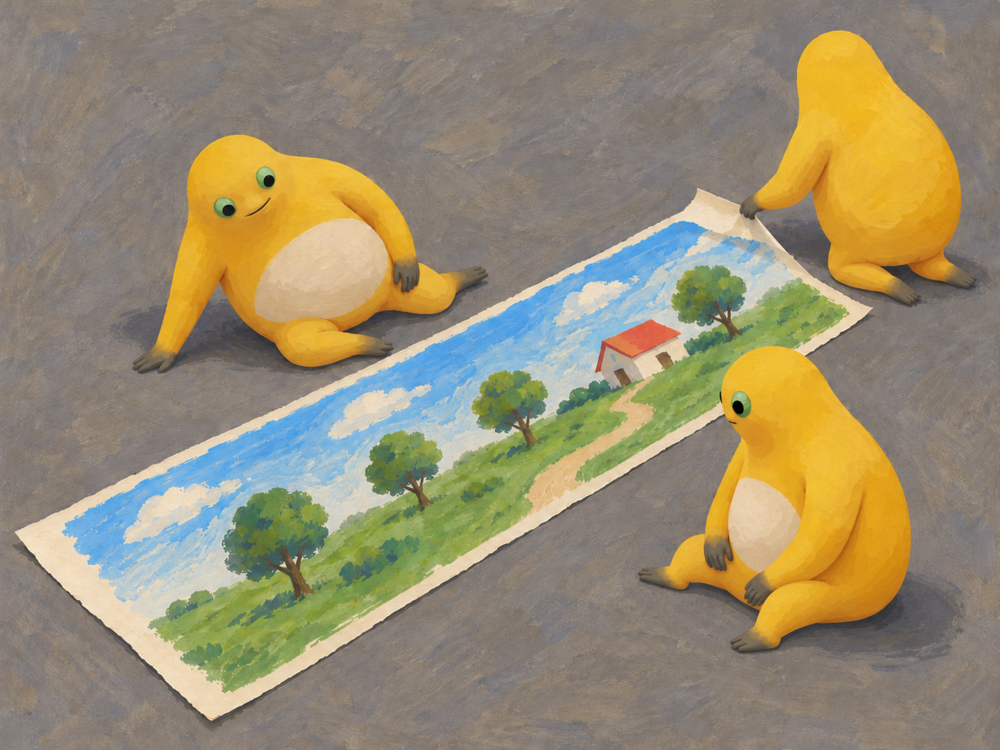
从你那边读过来 · V3 · 采用的定稿版本；具体来源与权利另列。画面为静态AI绘画，不据单张图像断言角色内心或时间过程。
这一桌慢慢排齐
面团在几双灰手之间，有的摊开，有的留成圆团。桌面很长，手边的事情很小。近处的背影把我们也带到这张桌旁。
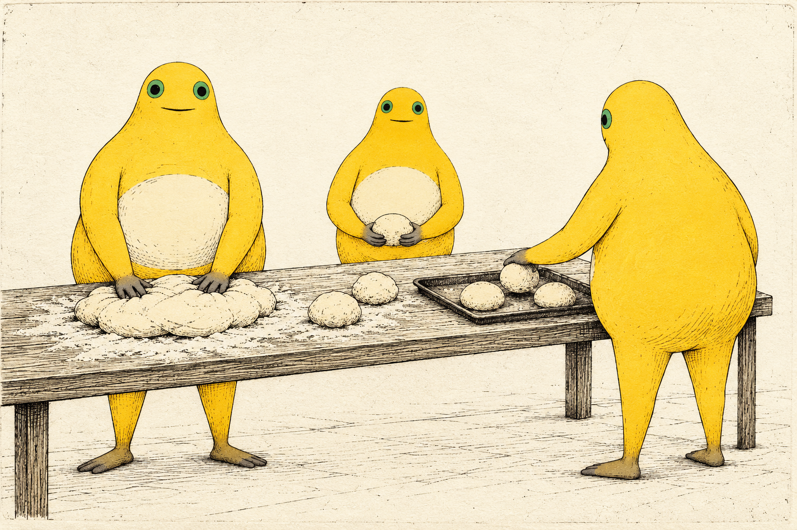
这一桌慢慢排齐 · V2 · 采用的定稿版本；具体来源与权利另列。画面为静态AI绘画，不据单张图像断言角色内心或时间过程。
整理的时候
左边的椅子还朝着同一个方向，右边已经叠在一起。手停在椅背和座面上。两种排列之间，空地显得格外宽。
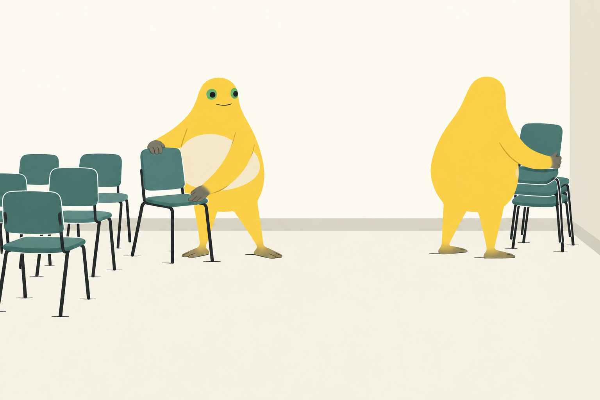
整理的时候 · V2 · 采用的定稿版本；具体来源与权利另列。椅子遮住部分手和身体，不能看清全部关节接触。
网从这一边沉下去
灰手牵住同一道网边。银色的鱼往右下聚，船板斜着挡在前面，浪纹又从另一边切过来。网外还有海，手里只有这一小段。
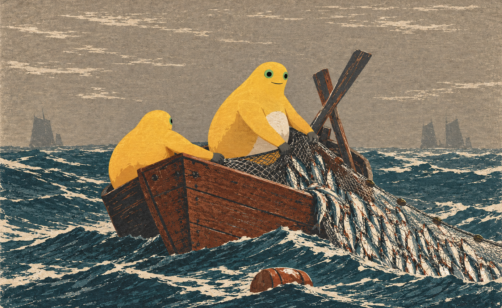
网从这一边沉下去 · V1 · 采用的定稿版本；具体来源与权利另列。船与网遮挡局部下体，不作全身比例验证。
拢到这一条边
散开的碎屑到扫帚前挤成一道黑边，簸箕口低低贴住地面。一个身体站着，一个蹲下，让细小的东西有了要去的方向。
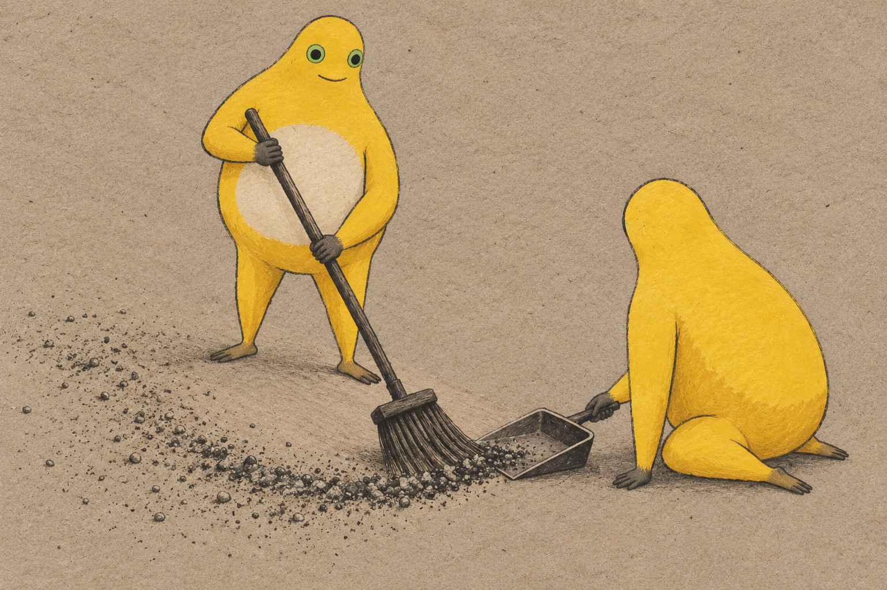
拢到这一条边 · V2 · 采用的定稿版本；具体来源与权利另列。画面为静态AI绘画，不据单张图像断言角色内心或时间过程。
擦到背上这一块
白色毛巾贴在黄色背上，下面的小角还松松地垂着。坐着的一只背向我们，另一只把手臂伸过来。两团黄色之间，只留着一小块蓝。
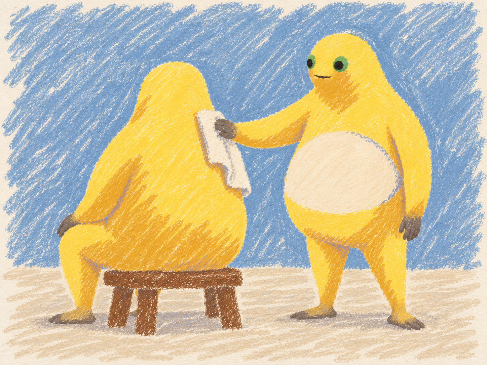
擦到背上这一块 · V2 · 采用的定稿版本；具体来源与权利另列。画面为静态AI绘画，不据单张图像断言角色内心或时间过程。
空地把两种节奏分开
左边挤着几只等待的身体，手都低低放着。右边的两只把手臂抬起来，中间留出一块不规整的地板。空地没有动作，却把两种节奏分得很清楚。
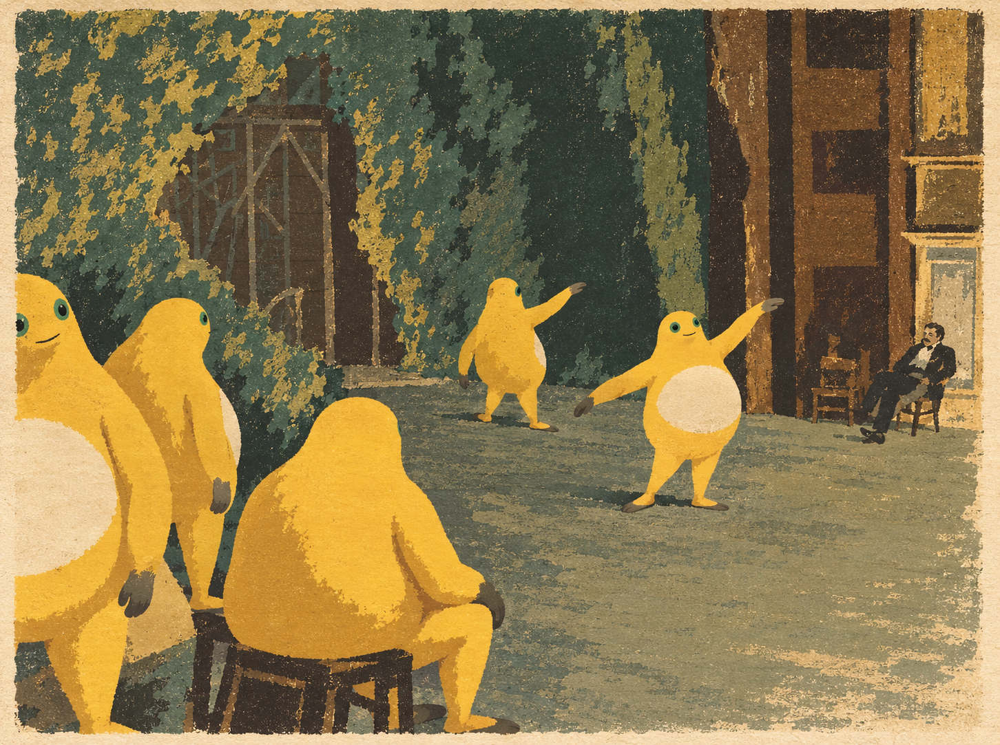
空地把两种节奏分开 · V1 · 采用的定稿版本；具体来源与权利另列。远体表情与手足经过缩略；关注空地与不同姿态的关系。
把平的那一段卷起来
地垫的两条边一直伸到画外，到了手掌下面，才绕成几圈挤在一起的线。卷前还有一点松起。背后已经空出来的地面，比卷芯安静得多。
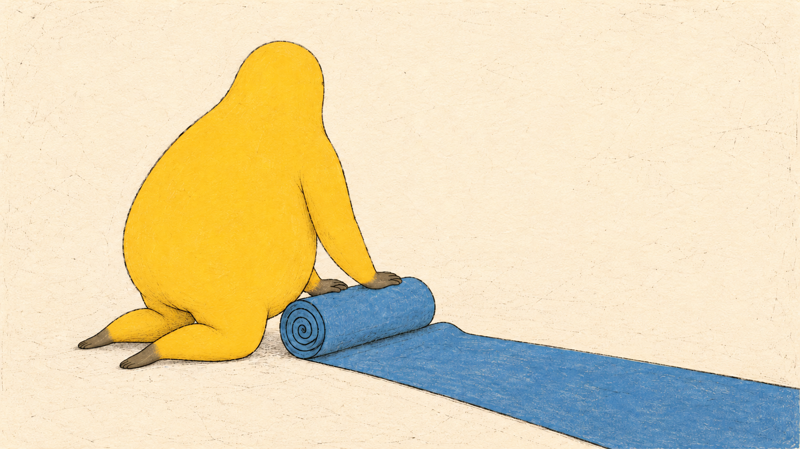
把平的那一段卷起来 · V2 · 采用的定稿版本；具体来源与权利另列。画面为静态AI绘画，不据单张图像断言角色内心或时间过程。
土从铲边落下来
铲沿外的土断开了一小截，下面的土堆已经接住它。旁边还留着一道凹下去的沟，同一种褐色，一处少了，一处多了。
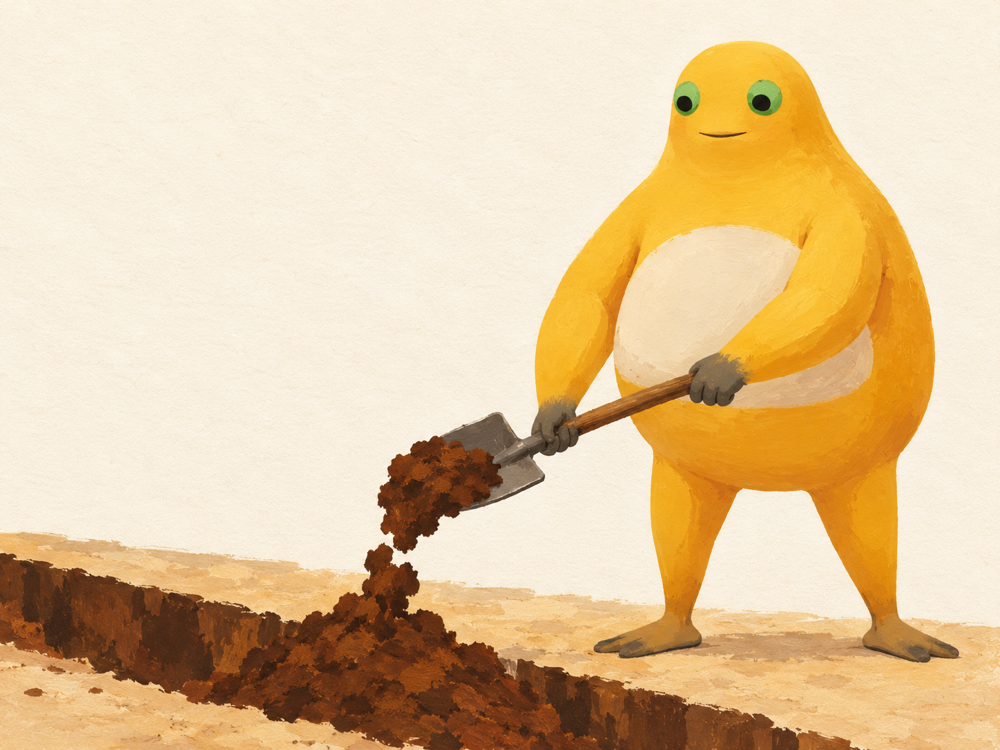
土从铲边落下来 · V3 · 采用的定稿版本；具体来源与权利另列。画面为静态AI绘画，不据单张图像断言角色内心或时间过程。
手臂里面的一小圈
猫把自己卷成一小圈，灰色手掌落在它两边。手臂很长，最后也只是放在地上。黄色的身体靠得近，仍给那一小圈留着自己的位置。
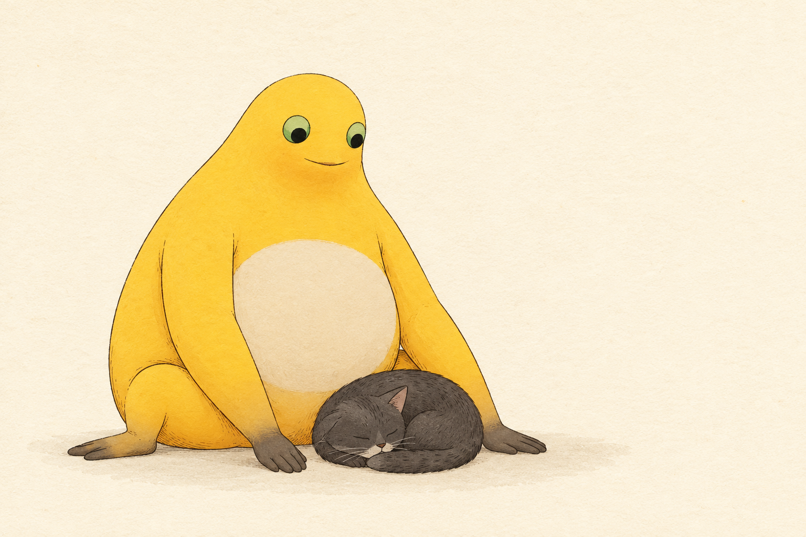
手臂里面的一小圈 · V1 · 采用的定稿版本；具体来源与权利另列。画面为静态AI绘画，不据单张图像断言角色内心或时间过程。
先把这一小段理直
两只手之间，蓝绳只直了一小段。剩下的先垂下，再在地上松开。空地很大，暂时不用全部理完。
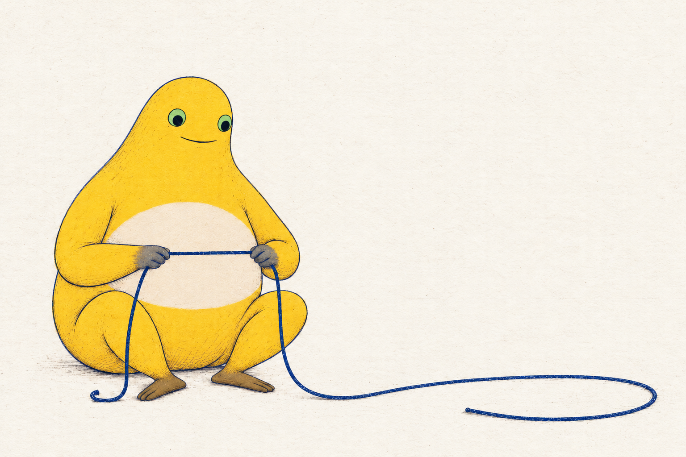
先把这一小段理直 · V2 · 采用的定稿版本；具体来源与权利另列。画面为静态AI绘画，不据单张图像断言角色内心或时间过程。
栏边停下来的三块黄
栏杆一直斜着往远处走，三块黄色在近处停住。树很大，水里的暗影也很大。它们靠在一起，留给水面同一个方向。
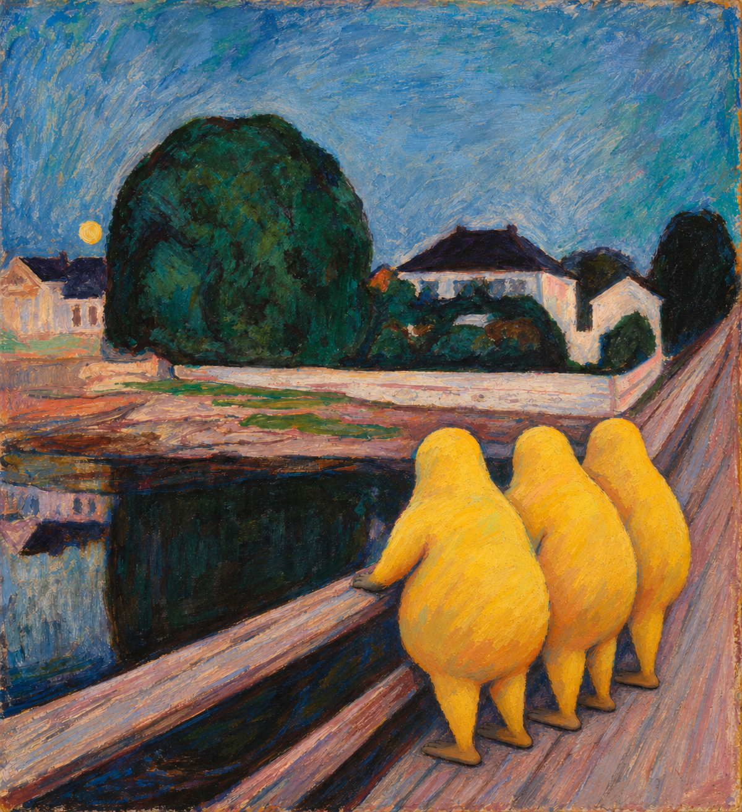
栏边停下来的三块黄 · V2 · 采用的定稿版本；具体来源与权利另列。三体以背视为主，脸部和腹部不可见。
这里有两个向下
一只把脚放在地上，另一只把脚放在墙上。蓝格子一路接过去，门还端端正正。两边站得都很自然。
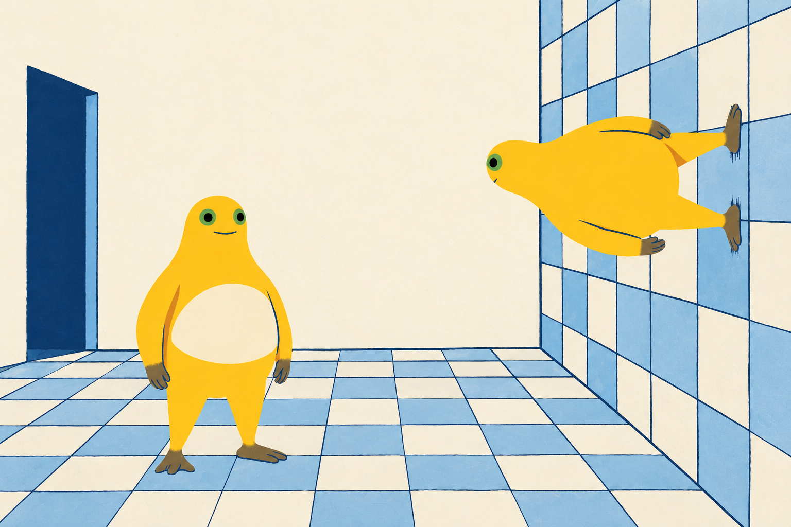
这里有两个向下 · V2 · 采用的定稿版本；具体来源与权利另列。两个相异重力方向是有意的超现实空间，不作真实现象说明。
越往里面，越占地方
门一扇比一扇小，黄色的身体却一只比一只大。砖缝把视线往里面送，最远的那只又把它顶回来。
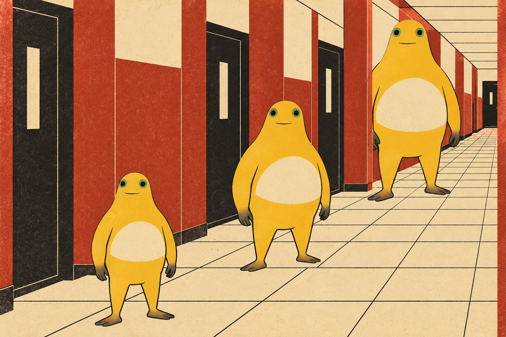
越往里面，越占地方 · V1 · 采用的定稿版本；具体来源与权利另列。人物尺度逆着透视增加，是有意设定。
伞里下雨
伞外的地面还是干的。雨密密地落在伞下面，刚好围住撑伞的这一小块地方。
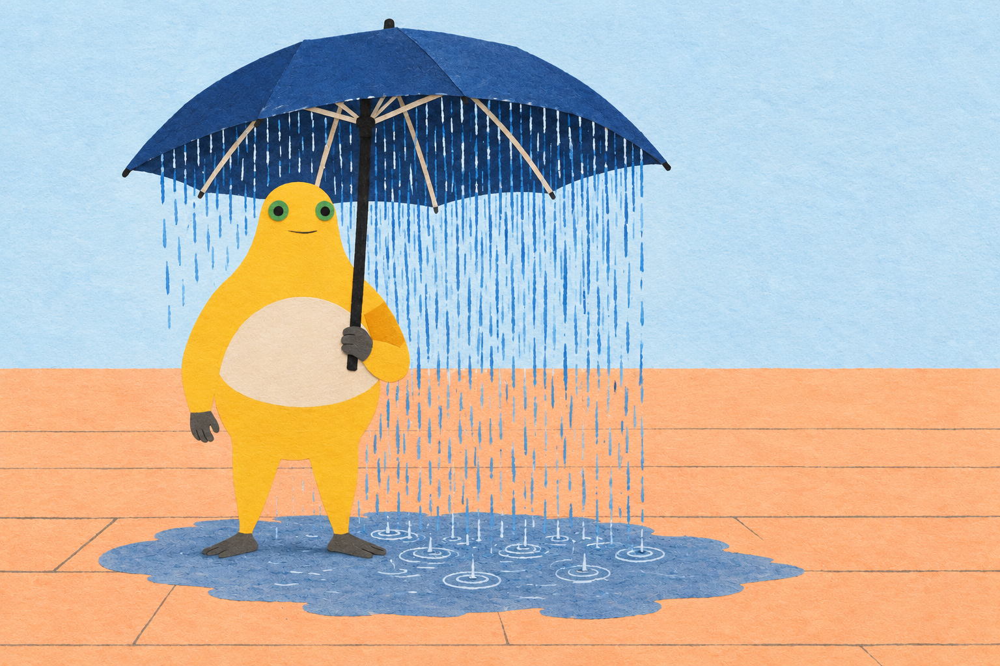
伞里下雨 · V2 · 采用的定稿版本；具体来源与权利另列。雨落伞内是超现实设定。
同一张桌子
桌布顺着木头爬上去，又从另一边垂下。两个空盘子还在各自面前，同一张桌子把视线挡住了。
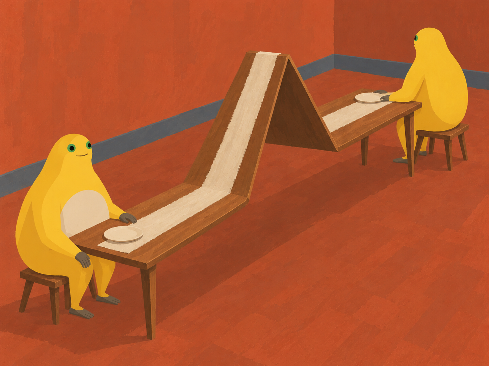
同一张桌子 · V2 · 采用的定稿版本；具体来源与权利另列。画面为静态AI绘画，不据单张图像断言角色内心或时间过程。
同一个姿势，落在两张表面上
同一个姿势，上面留在线里，下面落进黄色。布边卷起一点，纸角也翘着，空着的木板把两张图隔开。
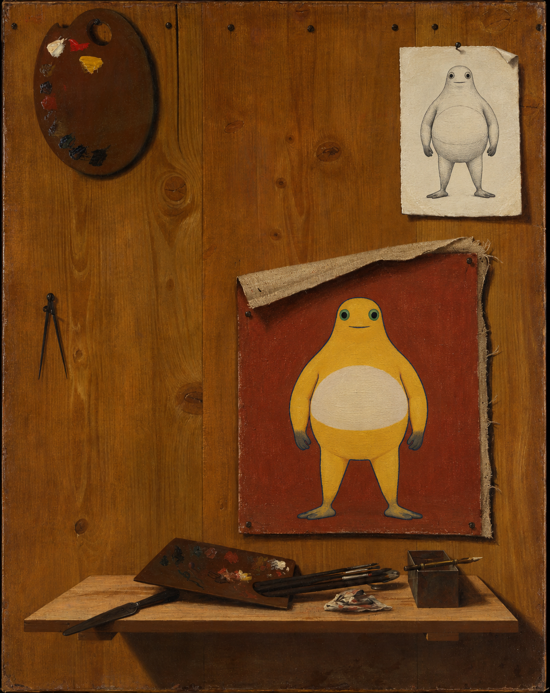
同一个姿势，落在两张表面上 · V3 · 采用的定稿版本；具体来源与权利另列。画中画与错视表面是AI绘画模拟，不是实物画布或版画。
在里面等一会儿
凳子和地砖都在里面，鱼留在玻璃外。一只转向侧面，另一只正面坐着。隔开它们和海水的，只是几条很直的蓝边。
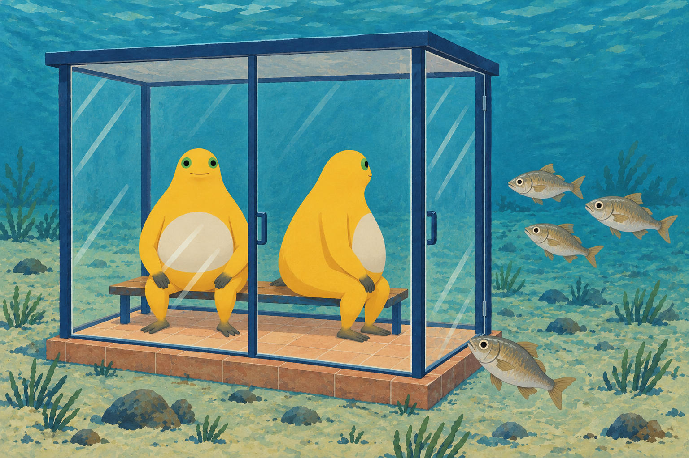
在里面等一会儿 · V2 · 采用的定稿版本；具体来源与权利另列。画面为静态AI绘画，不据单张图像断言角色内心或时间过程。
挤在开场以前
琴颈斜穿过几只手，红布压在下面。两个背影把中间的脸挤近了，后面那一张又从高处露出来。
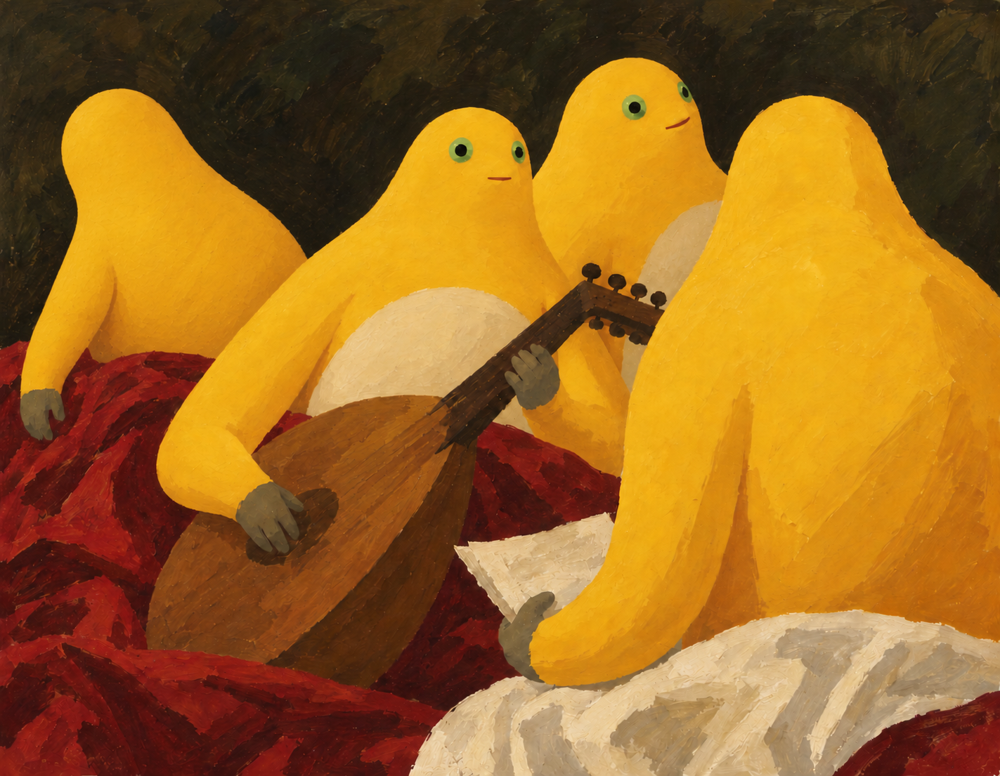
挤在开场以前 · V3 · 采用的定稿版本；具体来源与权利另列。人物相互遮挡，手与乐器局部不可见，不声称正在实际演奏。
门开着，空地还在外面
门里面，几块黄色挤在一起。门外的背影还隔着一大片浅色地面，砖缝一直通到门槛。
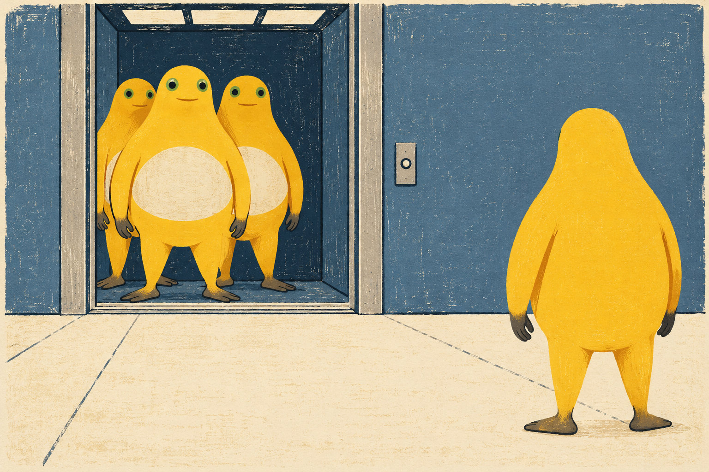
门开着，空地还在外面 · V1 · 采用的定稿版本；具体来源与权利另列。画面为静态AI绘画，不据单张图像断言角色内心或时间过程。
灯排得很齐，背影没有
灯一盏接一盏，间隔差不多。下面的背影高低错开，中间那只握着长号站定。小色点到处都在，整幅却很安静。
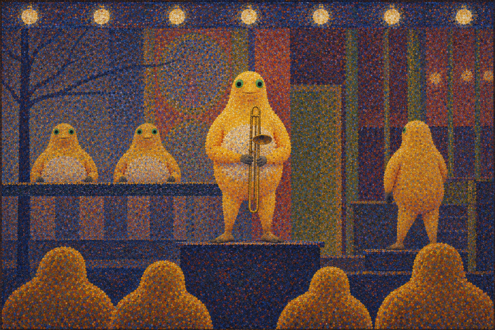
灯排得很齐，背影没有 · V1 · 采用的定稿版本；具体来源与权利另列。点描尺度使远处身体与手足较为简化。
门两边都还有空地
门关着，只挡住身后的一小片黄色。砖缝从两边继续往远处走，空地没有跟着关上。
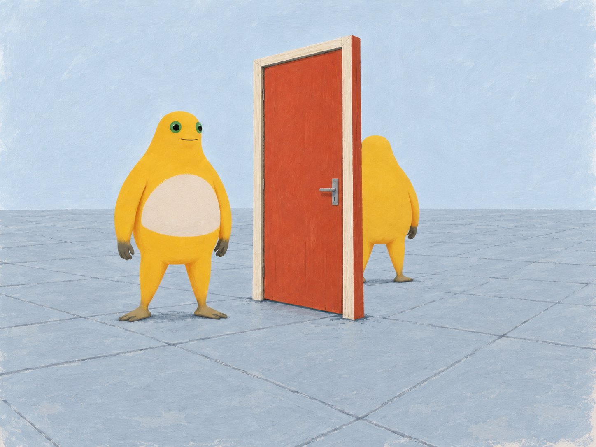
门两边都还有空地 · V2 · 采用的定稿版本；具体来源与权利另列。画面为静态AI绘画，不据单张图像断言角色内心或时间过程。
线网里留出一块黄
细线穿过浅色腹片，又从手臂下的空隙伸出去。右掌停在线结上，周围浓黑的碎块到这里松开了一点。
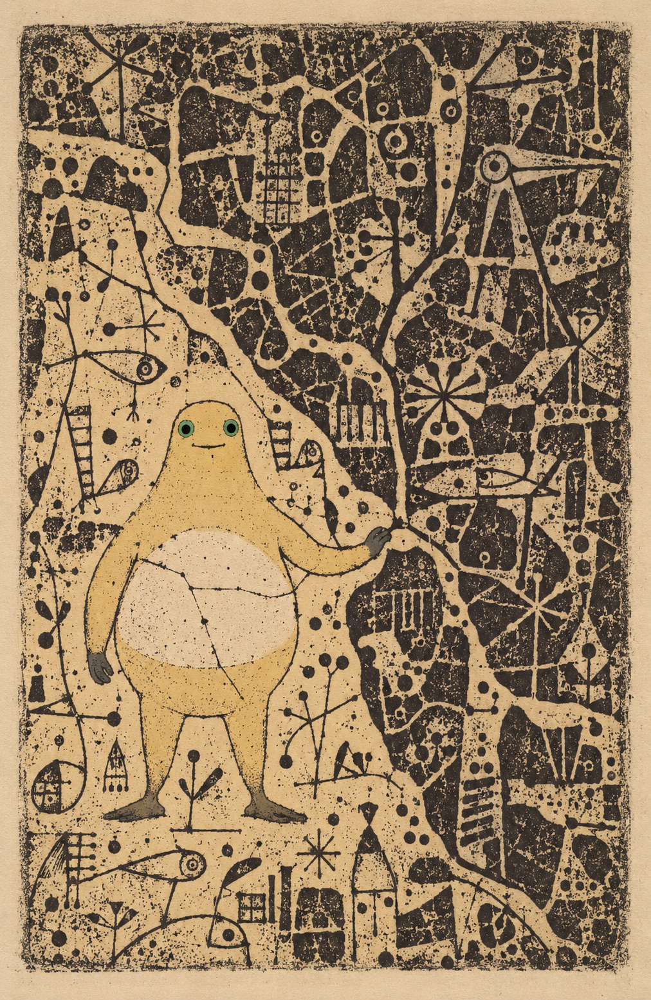
线网里留出一块黄 · V3 · 采用的定稿版本；具体来源与权利另列。画面为静态AI绘画，不据单张图像断言角色内心或时间过程。
留白里，两处轻轻错开
上面的石头，里面空着。下面那块墨更重。两处淡黄错开一点，脚下什么也没有；石边还留着一尾小鱼。
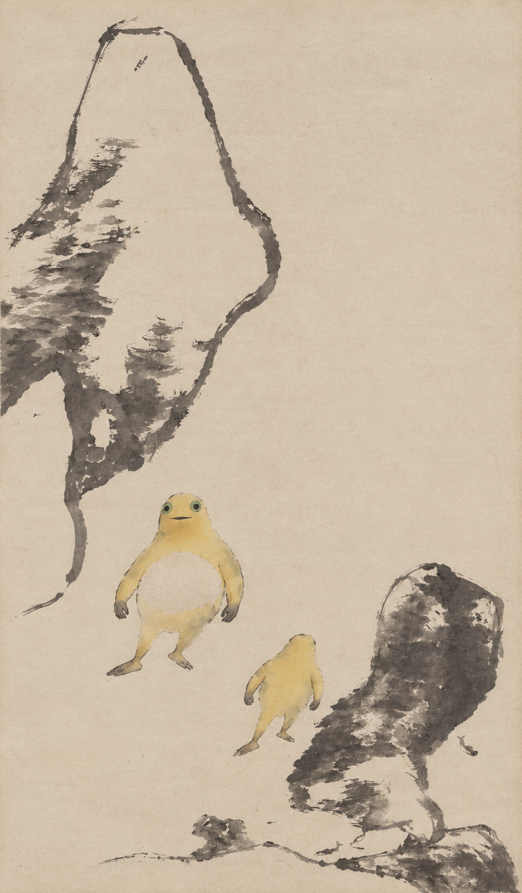
留白里，两处轻轻错开 · V1 · 采用的定稿版本；具体来源与权利另列。嘴部墨线较厚，足指为简笔；淡黄与留白是水墨转译，不宣称游泳。
白石上和低岸边
荷叶把两边压暗，石头中间却很空。两处淡黄一高一低，小鸟沿着石坡，把它们之间的距离接起来。
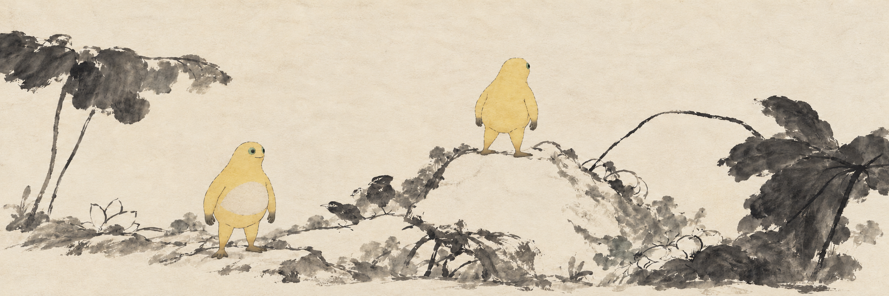
白石上和低岸边 · V2 · 采用的定稿版本；具体来源与权利另列。远处身体细节受尺度限制；原作绢墨转为纸墨淡彩视觉模拟。
手在盆沿停一下
一只灰掌搭在盆沿，另一只落进浅蓝里。宽宽的背把蓝墙挡住，柜边那条细花巾一直垂向地面。
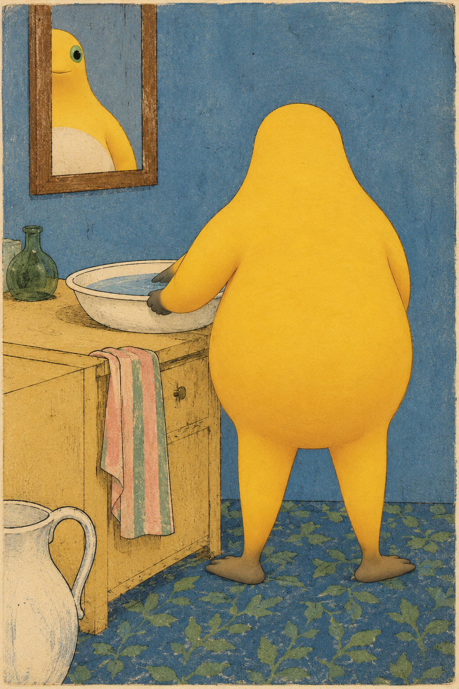
手在盆沿停一下 · V3 · 采用的定稿版本；具体来源与权利另列。背视主体的脸腹仅由镜中局部提示，不能当作另一完整正面。
雪路中间空着一段
一只在近处，两只留在坡上。屋檐的细线很密，雪路却空出一大段，脚印从这段白里慢慢接过去。
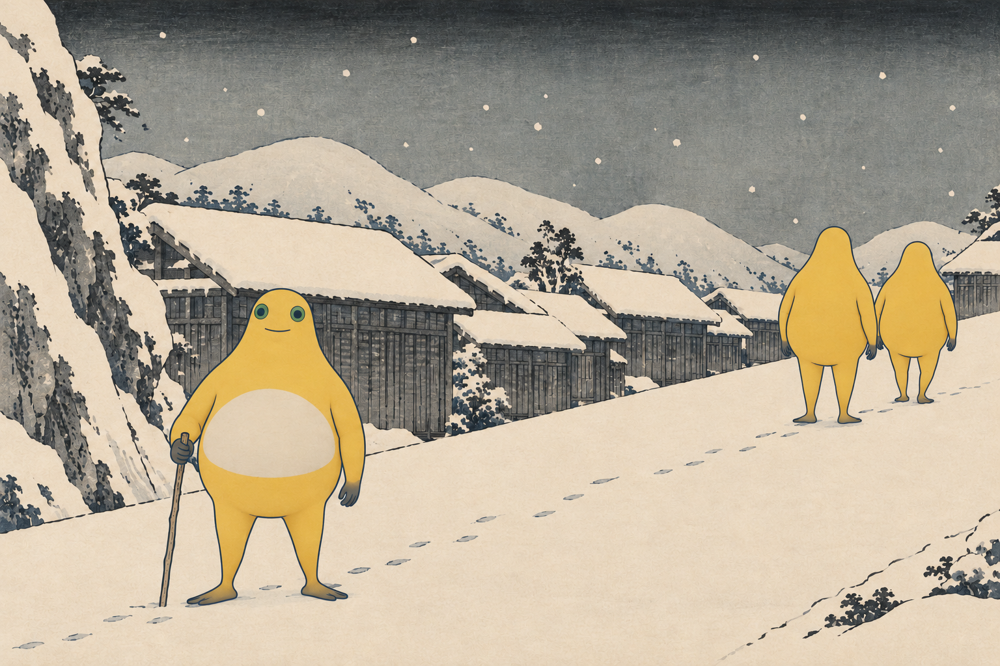
雪路中间空着一段 · V4 · 采用的定稿版本；具体来源与权利另列。画面为静态AI绘画，不据单张图像断言角色内心或时间过程。
影子先聚在一起·重作
身体、瓶子和罐子，各自留着一点距离。到了地面，灰紫色连成一片；中间那点浅色，像还没被合上的口。
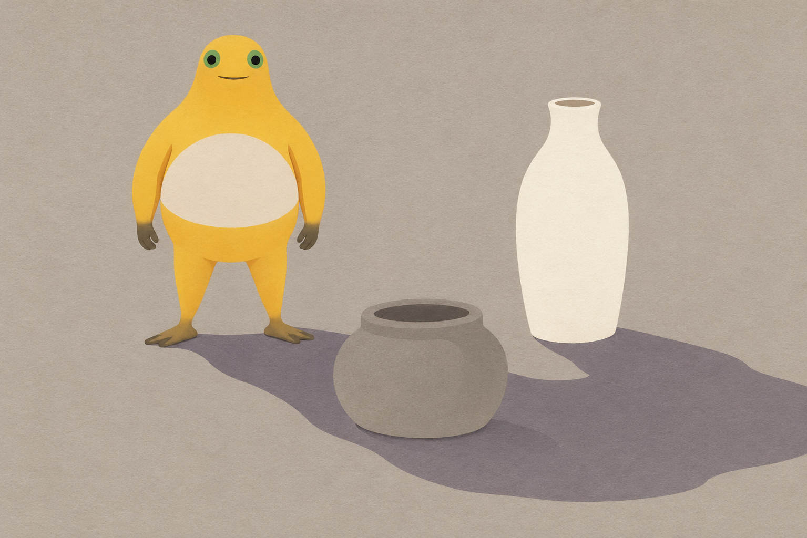
影子先聚在一起·重作 · V1 · 采用的定稿版本；具体来源与权利另列。画面为静态AI绘画，不据单张图像断言角色内心或时间过程。
弯干旁的一处接点
树冠都朝左，树干却各有各的弯法。一只灰掌贴在其中一根上，黄色的背在密叶里留下一处慢的地方。
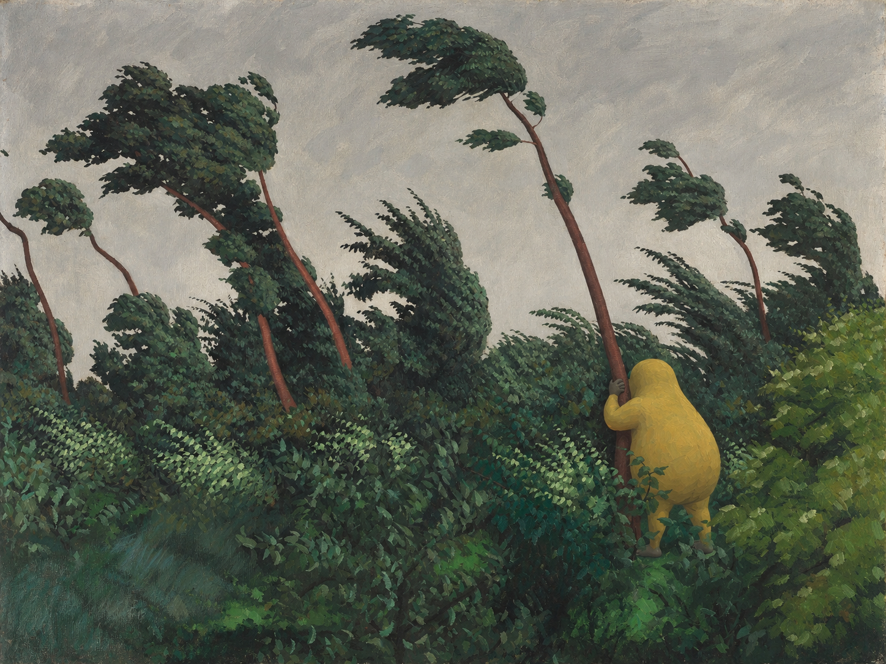
弯干旁的一处接点 · V1 · 采用的定稿版本；具体来源与权利另列。枝叶遮住局部腿部；姿势近乎直立，不宣称强烈抗风或拉弯树干。
红弧经过两块空白
红色从画外卷进来，落在一高一低的手边。黑形让出两块大小不同的空白，左下那片纸面一直没被填满。
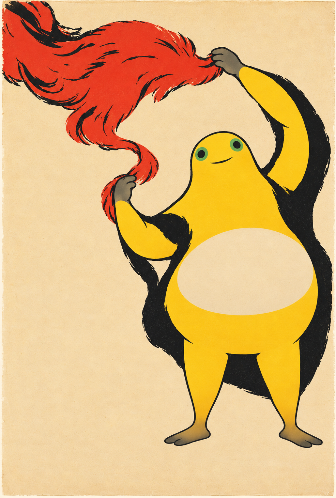
红弧经过两块空白 · V2 · 采用的定稿版本；具体来源与权利另列。画面为静态AI绘画，不据单张图像断言角色内心或时间过程。
张开的两臂接住留白
细横线铺满身后，几道留白把它切开。双臂沿着亮处展开，一只脚还踩在石边；右下那团密线把轻的身体压回纸上。
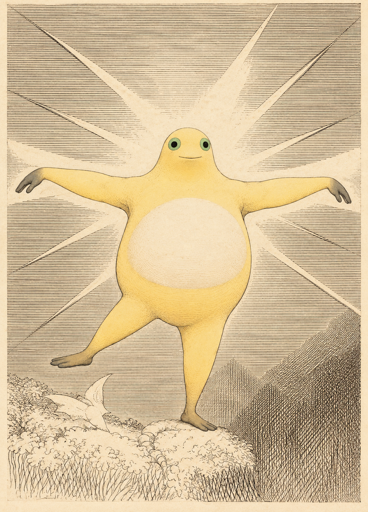
张开的两臂接住留白 · V1 · 采用的定稿版本；具体来源与权利另列。站腿与手指略长；以宽体代替原作人体，削弱了原作肌肉张力。
手臂越过床沿
格纹绕着床沿转下去，手臂越过它。猫把前爪搭上来，额头刚好碰到灰掌。右下的黑色让这一点接触更轻。
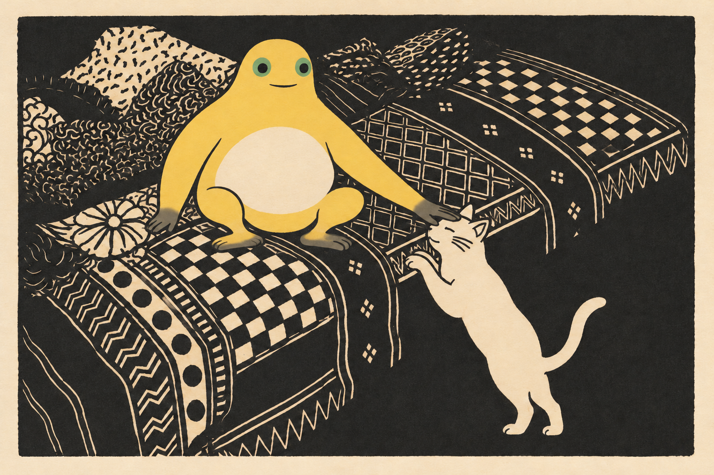
手臂越过床沿 · V2 · 采用的定稿版本；具体来源与权利另列。画面为静态AI绘画，不据单张图像断言角色内心或时间过程。
重量留在近岸
灰掌落在横岩上，脚还在近岸。树石的墨很密，背后的水却只剩纸色；山隔着这段空白慢慢升起来。
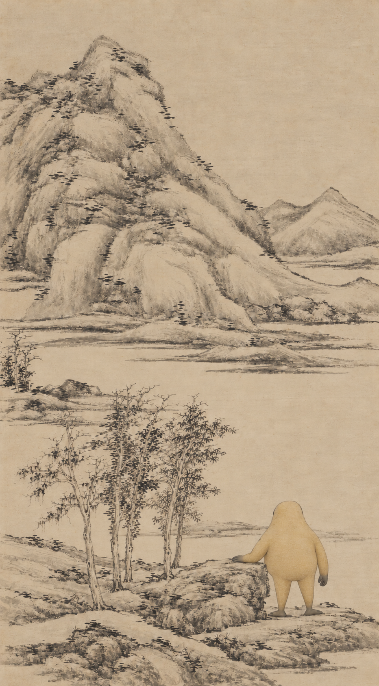
重量留在近岸 · V2 · 采用的定稿版本；具体来源与权利另列。低饱和淡赭背视，不核验不可见的脸和腹部；新增近岸居者改变原作无人景观。
黑色的一边松开了
黑色铺得很大，只在左边掀起一小段，露出灰色反面。另一只站在远处的边旁；两者之间，这片黑仍平平地躺着。
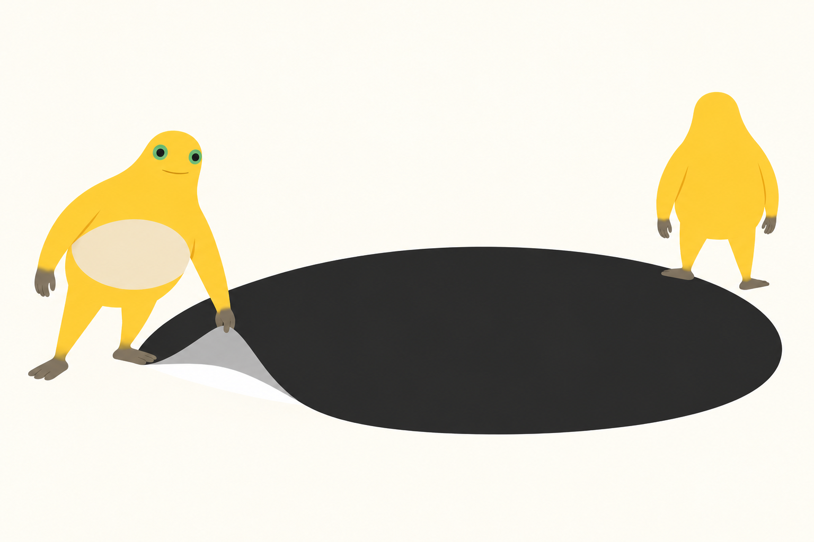
黑色的一边松开了 · V2 · 采用的定稿版本；具体来源与权利另列。掀起黑色平面的超现实实验，不作真实材料性质说明。
盆里留下一个空处
根团还带着盆壁留下的形状，旁边的陶盆已经空了。一双灰掌托着土，另一只手扶住盆沿，叶片从中间向左上展开。
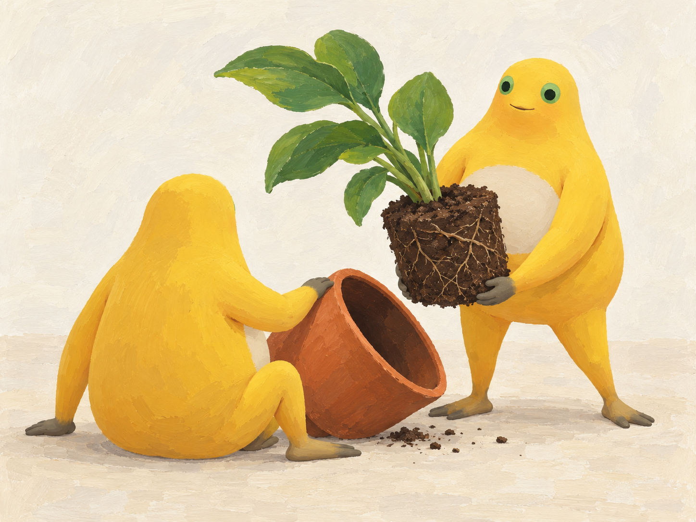
盆里留下一个空处 · V1 · 采用的定稿版本；具体来源与权利另列。画面为静态AI绘画，不据单张图像断言角色内心或时间过程。
被两边挤出的轮廓
右边三道紫灰色的弧向里收，左边的深蓝也凹进来。黄色顺着两边弯过去，脸从上端露出。没有站稳的脚，身体却在两侧的挤压中找到轮廓。
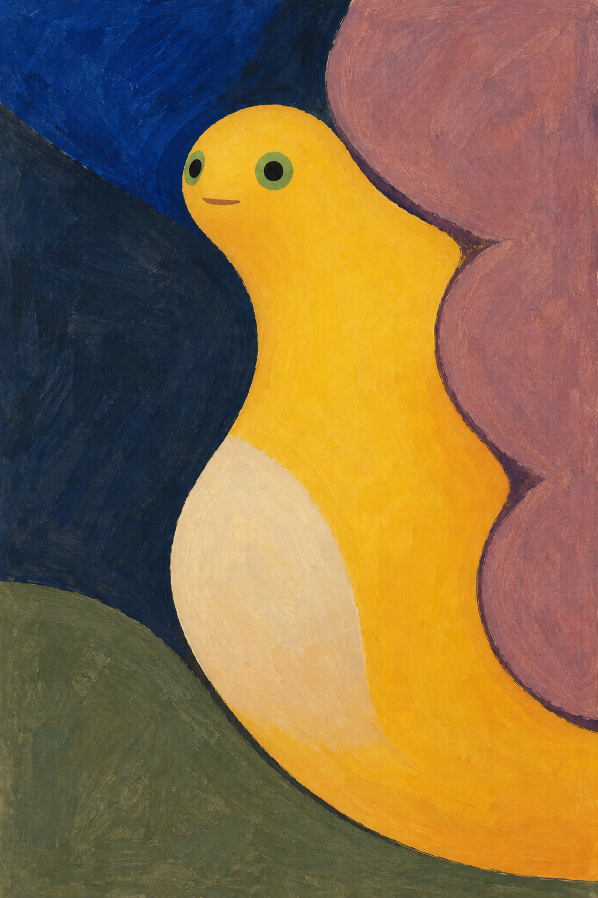
被两边挤出的轮廓 · V2 · 采用的定稿版本；具体来源与权利另列。脸的两边各有重量
左边浅色斜下来，碰到眼圈；右边的赭黄从眼睛下面掠过。短短的嘴，一端清楚，一端被颜色收住。脸没有换表情，两边的颜料却各自用了不同的力。
脸的两边各有重量 · V2 · 采用的定稿版本；具体来源与权利另列。目光向上停了一下
两只眼睛向上、向中间挪了一点。那里有一只赭红色的鸟，翅膀还清楚，腹部的一半已经沉进黄色。嘴没有动，目光却不再望向画外。
目光向上停了一下 · V2 · 采用的定稿版本；具体来源与权利另列。纸片还没回到原位
脸留在上面，手落到左边，乳白腹片偏向右下。灰色从它们中间穿过去，蓝白纸片占住了接回身体的位置。仍认得出它，却无法照原样拼回。
纸片还没回到原位 · V2 · 采用的定稿版本；具体来源与权利另列。五个形之间的空处
小圆靠近右边的大形，缝隙收得很窄。左下却留出一大片纸白。黄色斜过来，与另外四个形各自带着不同方向的擦痕，没有谁需要站在地上。
五个形之间的空处 · V2 · 采用的定稿版本；具体来源与权利另列。一张脸后面还有黄色
红色横过来，黄色在它下面又出现。黑色前景向下凹，露出半片乳白腹部。小脸留在上沿，身体已经铺成后面那片被遮住的地景。
一张脸后面还有黄色 · V1 · 采用的定稿版本；具体来源与权利另列。帽沿停在手里
斜桌和裁出画面的帽子挤向前景。奶蛙侧坐着，两只灰手托住帽沿。圆钝的身体被帽子、帘布和桌边围住，动作只在手与帽沿接触的地方慢下来。
帽沿停在手里 · V2 · 采用的定稿版本；具体来源与权利另列。一个向外，一个向花
左边望向画外，右边前倾看手里的花，灰手握住细细的花茎。同一间房里，两种注意各有去处；墙面的交叉短笔和红椅的宽擦，把它们留在一起。
一个向外，一个向花 · V1 · 采用的定稿版本；具体来源与权利另列。站在画前的背影
柱子挡住近处读册的人，奶蛙背向我们看画，手里的伞斜落到地面。狭长画幅把背影、画框和伞杆挤在一起，黄色成为安静站立的一道边。
站在画前的背影 · V1 · 采用的定稿版本；具体来源与权利另列。窗光经过脚边
房间已经暗了，窗外的蓝色还没有退去。奶蛙坐在沙发边，双手落在膝前。地板上的窗光比它更亮；光从脚边经过，它只是坐着。
窗光经过脚边 · V2 · 采用的定稿版本；具体来源与权利另列。岸线绕过手边
脸和托腮的灰手留在右下角，胸腹退出画面。弯曲的岸线重新伸向远处，水面与小人占据视野。近处没有展开的身体，把空间让给了那道长长的弯。
岸线绕过手边 · V2 · 采用的定稿版本；具体来源与权利另列。展开的手臂，收拢的身体
两只灰手接住头顶，长臂撑成一道拱；左下的人却蜷成暗团。树干在前后竖起，把展开与收拢隔在同一片林子里，两种姿态互相照见。
展开的手臂，收拢的身体 · V1 · 采用的定稿版本；具体来源与权利另列。手臂越过乐池的线
黑色披覆压住前景，浅灰乐池退到后面。灰手搭在栏杆上，越过一道细线，把近处的身体和远处的演奏连起来。大片黑色里，黄色显得更加安静。
手臂越过乐池的线 · V2 · 采用的定稿版本；具体来源与权利另列。纸停在两只手之间
白纸横过黄色身体，两只灰手与纸边交叠。桃色桌面和灰线机器退在周围，纸白独自亮着。动作不是把纸举高，而是在两只手之间停稳。
纸停在两只手之间 · V2 · 采用的定稿版本；具体来源与权利另列。白布展开的一瞬
白布斜着展开，一条腿从布后弯起，另一只脚仍踩着地面。黑色观众排在后方，前景的灰色剪影又近了一层。身体的动作停在落地之前。
白布展开的一瞬 · V1 · 采用的定稿版本；具体来源与权利另列。树影经过画板和腹部
冷影落在黄身上偏绿，经过白腹又变成蓝。手与画板、颜料盒相接，树影却不在身体边缘停下。几片不同的底色，让同一道影子改变了颜色。
树影经过画板和腹部 · 定稿 · 采用的定稿版本；具体来源与权利另列。来源与权利
本项目的AI辅助二维创作，不代表官方奶龙、参考艺术家或收藏机构。奶蛙为社区衍生形象；角色与参考作品权利归各自权利人。本馆不授予第三方内容开放许可，参考原图仅提供来源链接。